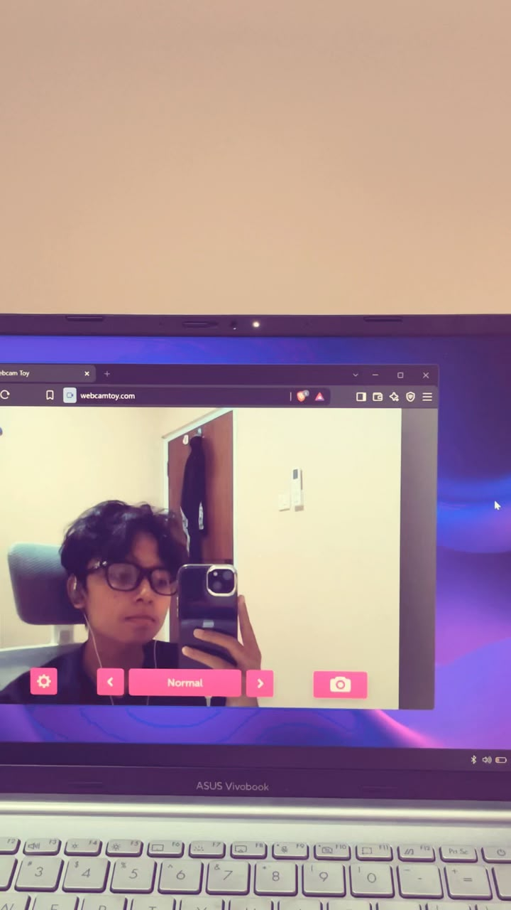
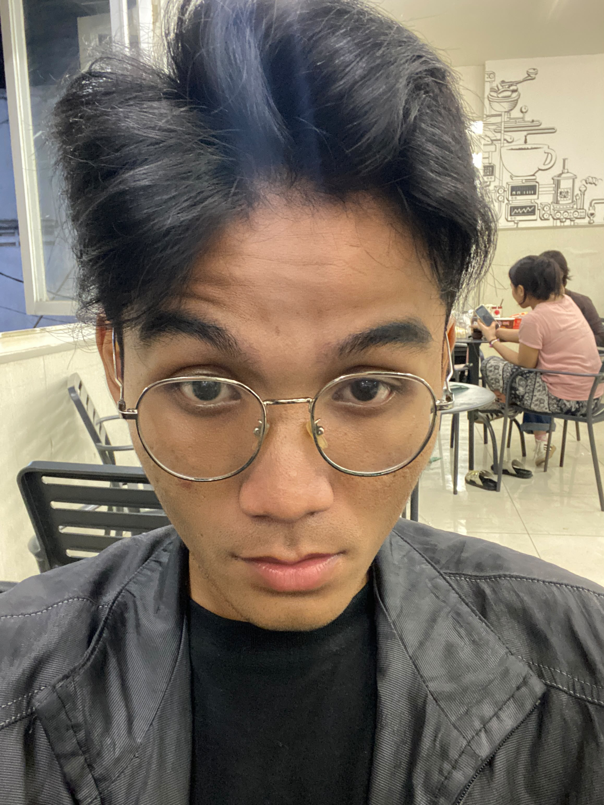
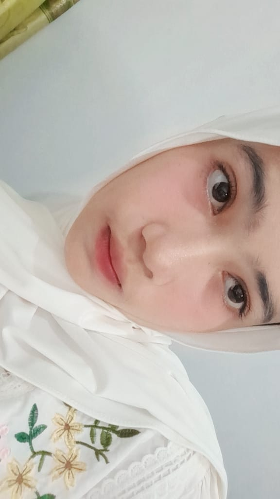
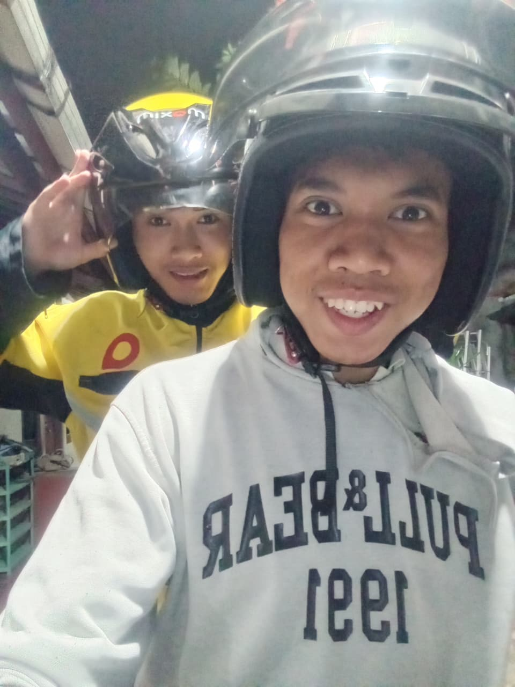
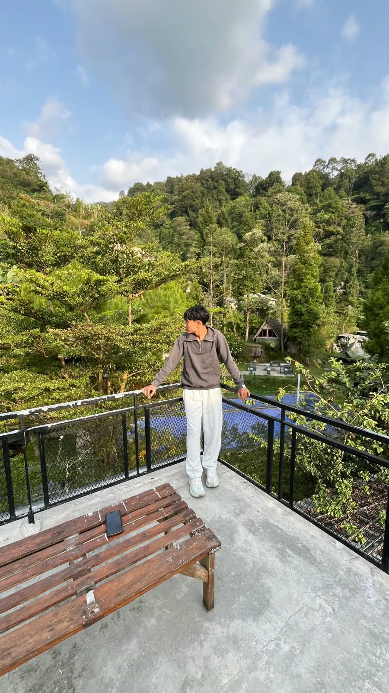

Desain UI/UX & Pemrograman Web
Selamat datang di website Kelompok 7, ini adalah website praktikum desain UI/UX pertemuan ke 3.

Nama Panjang: Faathih Syaqiq Al Maruf
NIM: 0110226055
Prodi: Teknik Informatika 01

Nama Asli: Dzikra Fajra Aulia
NIM: 0110226048
Prodi: Teknik Informatika 01

Nama Panjang: Erina Melati Batubara
NIM: 0110226073
Prodi: Teknik Informatika 01

Nama Panjang: Dzakwan Abyan Zubair
NIM: 0110226093
Prodi: Teknik Informatika 01

Nama Panjang: Fahri Abrian Herdiansyah
NIM: 0110226142
Prodi: Teknik Informatika 01